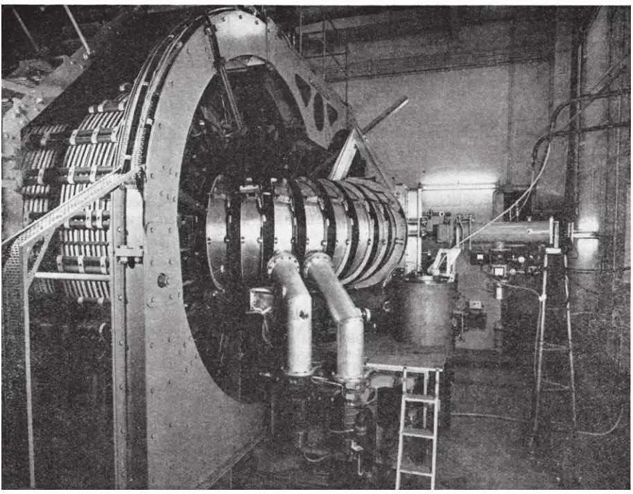
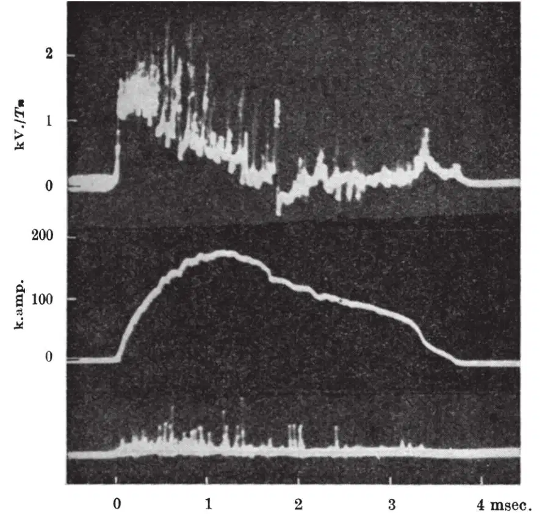
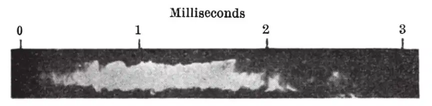
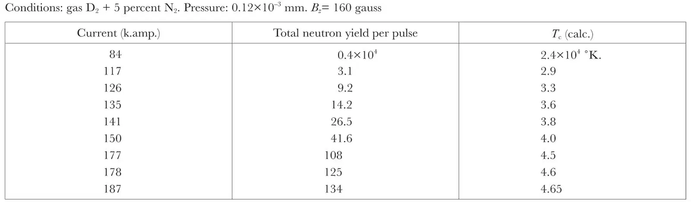
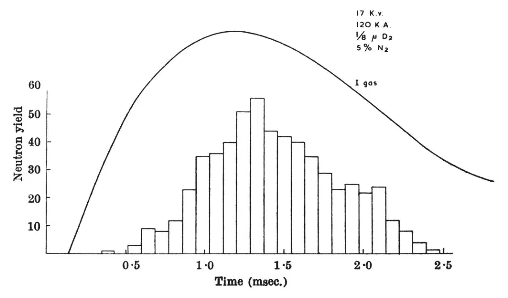
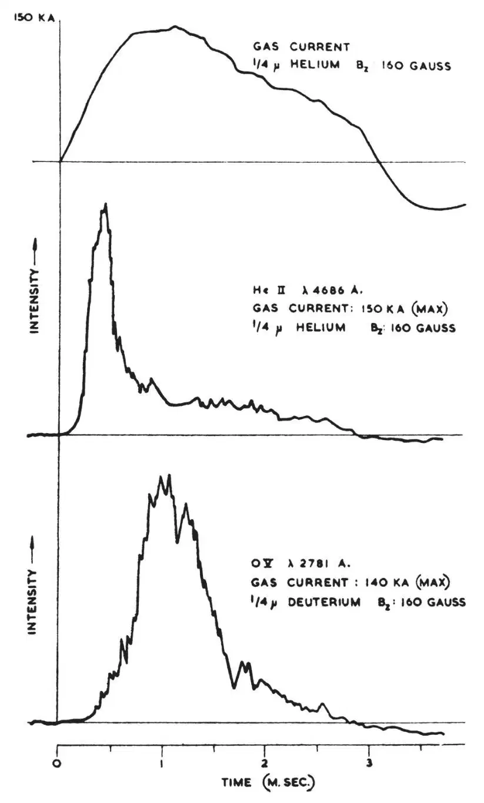
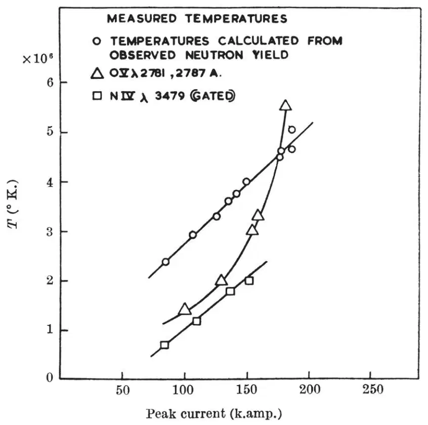
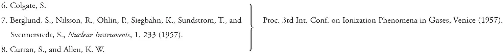
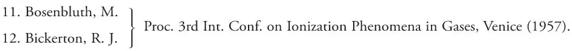

中文
中文P. C. Thonemann et al.
Editor’s Note
The first hydrogen bomb, which derived energy from nuclear fusion rather than fission, was detonated in 1952. Two years later, physicists began trying to bring controlled nuclear fusion into the laboratory. Here Peter Thonemann and colleagues report on initial experiments with a device called the ZETA, a toroidal chamber 3 metres in diameter holding a dilute plasma. They were attempting to heat that plasma to temperatures approaching those in the Sun by using powerful bursts of current. The team describe encouraging initial results, but would later find that numerous plasma instabilities foiled the scheme’s ultimate success. Today, more than 50 years later, a wide variety of plasma instabilities still put practical fusion energy out of reach. 中文
Introduction
THE basic conditions which must be established before a thermonuclear reactor is possible are, first, the containment of a high-temperature gas so that it is isolated from the walls of the surrounding vessel, and second, the attainment of temperatures sufficiently high for nuclear reactions to take place between the light elements. These two conditions are interdependent. Poor containment results in energy losses so large that gas temperatures much exceeding 106 °K. are unattainable. 中文
The experimental apparatus described was designed to study the containment of ionized hydrogen (or deuterium) by the magnetic field associated with the current flowing in the gas and to reach temperatures sufficiently high for nuclear reactions to be detectable using deuterium. This apparatus, known as ZETA, was built at the Atomic Energy Research Establishment Harwell. 中文
The principles underlying the containment of a high-temperature gas by means of the “pinch effect” have been discussed by a number of authors1-3. 中文
The constricted gas discharge formed by passing a high current through a low-pressure gas, while isolating the gas from the tube walls for short periods of time, rapidly develops instabilities and distortions which lead to bombardment of the walls by electrons and positive ions. The consequent cooling and recombination make it impossible to maintain high temperatures except for a transient period4-8. These instabilities can be suppressed by the combination of an axial magnetic field parallel to the direction of the discharge current and by the fields produced by eddy currents induced in the surrounding metal walls when the current channel changes its position. 中文
Theoretical studies of discharge stability in the presence of an axial magnetic field have been published9-12, together with experimental evidence for stability in a straight discharge tube13. 中文
The preliminary results reported in this article show that relatively long-time stability can be achieved in a toroidal metal-walled tube. The neutron yield and the kinetic ion temperatures have been measured over a limited range of conditions. The nuclear reaction-rates observed are not inconsistent with those expected from a thermonuclear process. 中文
Apparatus
ZETA is a ring-shaped discharge tube of aluminium, 1-m. bore and 3-m. mean diameter, containing gas at low pressure. The gas, usually at a pressure of about 10–4 mm. of mercury, is made weakly conducting by a radio-frequency discharge. The toroidal ionized gas plasma forms the secondary of a large iron-cored pulse transformer. A condenser bank, storing up to a maximum of 5 × 105 joules, is discharged into the primary of the transformer, and produces a unidirectional current pulse in the gas up to a maximum of 200,000 amp. The current pulse in the gas lasts for about 4 msec. and is repeated every 10 sec. A steady axial magnetic field is generated by current-carrying coils wound on the torus. This field can be varied from zero to 400 gauss. 中文
Fig. 1 shows the discharge tube assembled with the transformer. A vacuum spectrograph can be seen connected to the torus body. 中文

Fig. 1. Photograph of ZETA. The apparatus is enclosed in a room with concrete walls 3 ft. thick for radiation shielding 中文
Electrical Characteristics
Typical current and voltage oscillograms are shown in Fig. 2. The top trace is the “voltage per turn” measured by a loop around the iron core enclosed by the discharge tube. The length of the discharge path is approximately 1,000 cm. so that the initial electric field at the boundary of the ionized gas is about 2 V. per cm. The primary winding is short-circuited when the voltage per turn is zero, thus preventing the charge on the condensers reversing. The second trace shows the current flowing in the gas, which persists for about 2 msec. after the transformer primary is short-circuited. 中文

Fig. 2 Oscillograph recordings of the voltage per turn of the transformer, and the secondary current Is. The lower trace shows the pulses produced by proton recoil in a scintillation neutron counter. Conditions: gas, deuterium +5 percent nitrogen + 10 percent oxygen; pressure, 0.13×10–3 mm. mercury; axial field, 160 gauss 中文
As the current decreases the plasma expands until it reaches the walls. It is then cooled. A sudden increase in resistance accompanies this process and the consequent increase in |dI/dt| produces a severe voltage transient which may rise to tens of kilovolts. Destructive voltage transients of this type are suppressed by the addition of 5 percent nitrogen without affecting the neutron yield. 中文
Stability
Measurements with magnetic field-probes and Langmuir probes, together with streak photographs of the current channel taken through a slit in the vacuum vessel, show the current channel to be quasi-stable and clear of the walls for the greater part of the current pulse. Fig. 3 is a reproduction of a streak picture of a helium discharge. The limit of the black area represents the internal diameter of the tube. The light recorded is that of the spark lines of impurities and of (He II) 4,686 A. Streak pictures taken of discharges in deuterium are difficult to interpret as the light is emitted by neutral atoms and by impurity ions released into the current channel from the walls. 中文

Fig. 3. Streak picture of a helium discharge. Conditions: initial gas pressure 0.25×10–3 mm. mercury; axial field 160 gauss; peak current, 130 k.amp. The tube walls lie at the boundary of the dark region 中文
The centre of the current channel is displaced towards the outer wall due to the tendency of the ring current to expand. This expansion is opposed by eddy currents in the metal walls, which are of 1-in. thick aluminium. Measurements of the internal magnetic fields in the plasma are reproducible and show that the axial magnetic field, Bz , is trapped in the gas. On the axis it increases to approximately ten times the initial value. In general, the resultant lines of magnetic force due to the Bθ and Bz components are helical and vary in pitch over the cross-section of the plasma. The stability of a discharge with this magnetic-field configuration has not been treated theoretically. 中文
The presence of the magnetic field-probe, which is 1 in. in diameter, greatly increases the discharge resistance and reduces the production of neutrons. 中文
The diameter of the current channel estimated from the magnetic-field measurements and the streak photographs is between 20 and 40 cm. at peak current. Transmission measurements with 4-mm. microwaves demonstrate that the electron density is greater than 6×1013 cm.–3 . This density is consistent with the assumption that all the gas present is ionized and contained in the current channel. 中文
High-Energy Radiations
Neutron emission arising from the D-D reaction is observed for gas currents in deuterium in excess of 84 k.amp. Emission occurs for a period of about 1 msec., centred about the peak current. 中文
Table 1 shows the average number of neutrons emitted per pulse as the peak current is increased. 中文
Table 1

Fig. 4 is a histogram showing the average rate of neutron emission during the current pulse. 中文

Fig. 4 Histogram showing the number of neutrons counted at various times during the current pulse 中文
The third column of Table 1 gives the temperatures required to produce the observed neutron yields assuming a thermonuclear process. In calculating these figures, it has been assumed that the current channel is 20 cm. in diameter, emits neutrons uniformly for a period of 1 msec. and all the deuterium initially present is contained in the current channel. Since the reaction rate is an extremely sensitive function of temperature, variations in these parameters do not greatly affect the calculated temperature Tc. A comparison is made of the calculated and spectroscopically observed temperatures in Fig. 6. 中文
Within the pressure-range investigated (0.8–10.0×10–4 mm.) the neutron yield decreased with increasing pressure. Neutrons were observed when 25 percent of the gas initially present was nitrogen, but the yield was much reduced. 中文
The results obtained with a directional neutron counter moved around the torus showed that, within a factor of two, the neutron emission was uniform and did not arise from localized sources. 中文
No correlation is found between the time of neutron emission and the voltage fluctuations during the current pulse. However, neutrons are produced at the large voltage transient at the end of the pulse, but these can be eliminated by the addition of nitrogen gas. 中文
X-rays are observed towards the beginning of the current pulse. Their average energy lies in the range 20–30 kV. and on the average some 105 quanta per pulse are emitted by the whole tube. The number and energy of the X-ray quanta are insensitive to gas pressure and current, but increase in intensity as the axial magnetic field is increased. 中文
Spectroscopic Observations
Both arc and spark line intensities vary greatly over the period of the pulse. In general, emission lines of normal atoms and ions up to three times ionized have a maximum intensity before peak current. Fig. 5 shows the intensity variation of (He II) 4,686 A. and (O V) 2,781 A. 中文

Fig. 5. The two lower traces are photomultiplier records of the intensity variation of two selected spark lines during the current pulse 中文
The Doppler broadening of spark lines emitted in a radial direction is used for estimating the kinetic ion temperature of deuterium and neon discharges. Small quantities of oxygen and nitrogen introduced into deuterium discharges provide spark lines in a convenient part of the spectrum. The breadth of the lines is of the order of 1 A. and can be measured with a quartz spectrograph having a dispersion of 20 A./mm. Calculations show that both Stark and Zeeman effects make a negligible contribution to the line-breadth. Mass motion may contribute to the observed broadening to an appreciable extent, but both probe and streak records show no evidence of gross motion. The contribution to the line breadths of small-scale instabilities and turbulence remains to be measured. 中文
Some 300 emission lines have been identified in the wave-length range 400–2,500 A. The most prominent are those oxygen, nitrogen, aluminium and carbon. Strong lines of (O VI) are recorded. In this wave-length range more than 400 lines remain unidentified. 中文
The (O V) line has been used for Doppler breadth determination without time resolution as it has a maximum intensity in the neighbourhood of peak current. For (N IV) 3,479 A. this is not so, and light was admitted to the spectrograph for a period of 1 msec. centred about peak current. 中文
The kinetic temperatures obtained by observation of (O V) and (N IV) lines as a function of peak current are shown in Fig. 6. The ion temperatures are found to decrease with increasing initial pressure of deuterium. No satisfactory measurement of electron temperature has yet been made. 中文

Fig. 6. Ion temperature as a function of peak current determined from the Doppler broadening of (O V) and (N IV). Conditions: initial gas pressure, 0.13×10–3 mm. deuterium and 5 percent nitrogen; Bz=160 gauss. The temperature of the deuterium gas, estimated from the observed neutron yield, is shown for comparison 中文
Conclusion
These preliminary results demonstrate that it is possible to produce a stable highly ionized plasma isolated from the walls of a toroidal tube. Hydrogen gas has been maintained in a state of virtually complete ionization with a particle density lying between 1013 and 1014 per cm.3 , for times of milliseconds. The mean energy of the ions in the plasma is certainly of the order of 300 eV., and there are many indications that the electron temperature is of the same order. The containment time and the high electrical conductivity are both adequate for the detailed study of magnetohydrodynamical processes. 中文
To identify a thermonuclear process it is necessary to show that random collisions in the gas between deuterium ions are responsible for the nuclear reactions. In principle, this can be done by calculating the velocity distribution of the reacting deuterium ions from an exact determination of both the energy and direction of emission of the neutrons. The neutron flux so far obtained is insufficient to attain the desired accuracy of measurement. 中文
Investigations leading up to the present results have been constantly encouraged and supported by Sir John Cockcroft and the late Lord Cherwell. The theoretical investigations have been directed by Dr. W. B. Thompson, of the Theoretical Physics Division. 中文
A major part of the engineering design and construction of ZETA was done by the Metropolitan-Vickers Electrical Co., Ltd. 中文
(181, 217-220; 1958)
P. C. Thonemann, E. P. Butt, R. Carruthers, A. N. Dellis, D. W. Fry, A. Gibson, G. N. Harding, D. J. Lees, R. W. P. McWhirter, R. S. Pease, S. A. Ramsden and S. Ward: Atomic Energy Research Establishment, Harwell.
References:
1. Post, B. F., Rev. Mod. Phys., 28, 338 (1956).
2. Pease, R. S., Proc. Phys. Soc., B, 70, 11 (1957).
3. Burkhart, L. C., Dunaway, B. E., Mather, J. W., Phillips, J. A., Sawyer, G. A., Stratton, T. F., Stovall, E. J., and Tuck, J. L., J. App. Phys., 28, 519 (1957).
4. Kurchatov, I. V., Atomnaya Energiya, 1, No. 3, 65 (1956). English translation, J. Nuclear Energy, 4, 198 (1957).
5. Artaimovitch, L. A., Andrianov, A. M., Bazilevakaya, O. A., Prokhorov, YU. G. and Filippov, N. V., Atomnaya Energiya, 1, No. 3, 76 (1956). English translation, J. Nuclear Energy, 4, 203 (1957).

9. Shrafranov, V. D., Atomnaya Energiya, 1, No. 5, 38 (1956). English translation, J. Nuclear Energy, 5, 86 (1957).
10.Tayler, R. J., Proc. Phys. Soc., B, 70, 1049 (1957).

13. Bezba chenko, A. L., Golovin, I. N., Ivanov D. P., Kirillov, V. D., Yavlinsky, N. A., Atomnaya Energiya, 1, No. 5, 26 (1956). English translation, J. Nuclear Energy, 5, 71 (1957).